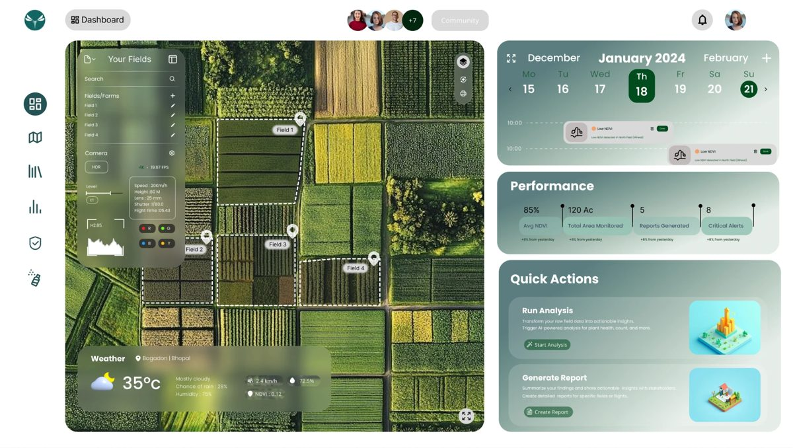
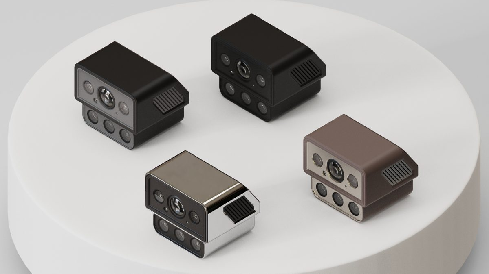
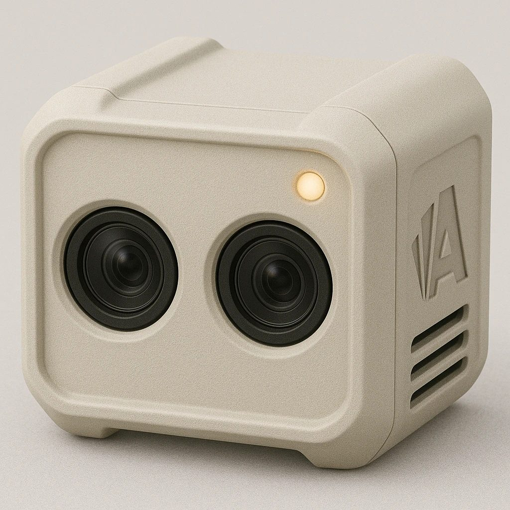
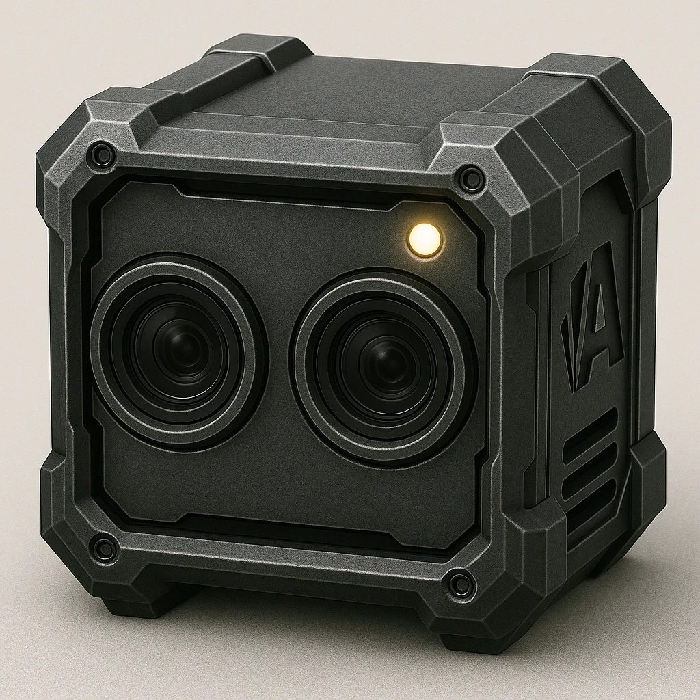

What I read from your references, three design directions to choose from, and the decisions I need before building the 3D models. Nothing is built yet: the brief asks to stop here.




| Reference | Form and construction | Materials and colour | Details |
|---|---|---|---|
| Multispectral, 6-cam | Two tiers. A deep upper housing whose top sweeps into a large radius at the rear. Below it a narrower, shallower lens strip, set back a few mm. The front is a recessed bezel plate inside a 3 mm frame. | Matte body; satin bezel a shade or two lighter than the body. Stealth #282421 body and #787677 bezel. Bronze is a deep brown body with a champagne bezel. Chrome is a mirror body with a gloss black bezel. | A ribbed rubber side pad on a wedge block near the top front, with about 8 ribs. Two tiny dots on the bezel, beside the centre lens. Lens rings are dark with a thin bright lip. |
| Duos, sand | Near-cube with large corner radii. Recessed front panel with a raised frame. A raised rail across the top. Feet notch at the base. | Fine bead-blast texture, beige (about #c2b7a4). | Two big lens rings side by side, an amber LED top right, an embossed "A" on the side, three vent slots below it. |
| Duos, rugged | Same cube with chamfered corner bumpers bolted on, and a gasket line around the front panel. | Dark gunmetal, textured (about #363934). | Four screws at the front corners. Lens rings get a second stepped ring. |
| Dashboard | Left icon rail, top bar with pill buttons, a big map, and three stacked frosted cards. | White ground #ffffff. Sage and teal glass #aac3b8 to #e5ede8, with darker panel heads #5b7d80. Forest #004c1e for selection, teal ink #255052 for icons. | Geometric sans type, white pins on the map, small isometric illustrations, "+8 % from yesterday" deltas. |
All three keep the NDVI ramp only for data. A is drawn from your dashboard and follows your note to keep the site light, easy to scroll and lively. C is the dark base the brief describes, for comparison.
Multispectral and stereo cameras with edge AI, for farms that cannot wait for a symptom.
Multispectral and stereo cameras with edge AI, for farms that cannot wait for a symptom.
Multispectral and stereo cameras with edge AI, for farms that cannot wait for a symptom.
| Token | Value |
|---|---|
| Type scale | 12 · 14 · 16 · 18 · 22 · 28 · 36 · 48 · 64 · 88 px (about 1.25 ratio). Mono for specs, units and data labels. |
| Spacing | 4 px base: 4 · 8 · 12 · 16 · 24 · 32 · 48 · 64 · 96 · 128 |
| Radius | 8 controls · 16 cards · 24 panels (the dashboard's) · 999 pills |
| Motion | Ease cubic-bezier(.22,1,.36,1); 240 ms for UI, 700 ms for reveals, 1200 ms for camera moves. No bounce. Off under reduced motion. |
| Data colour | NDVI ramp #965C3C → #D6AA46 → #C4CD5A → #60AA4E → #16683A, used only on maps and charts. |
As you asked, the home page shows only the assembled cameras. The exploded side-scroll lives only on /product/multispectral and /product/duos. Both use your four stages:
MS: 4 × M12, 25 mm, band-pass filters, front plate.
Duos: 2 × M12 at a 26 mm baseline, front plate.
MS: four sensors on one interconnect board.
Duos: 2 × Mira220, 1600 × 1400 global shutter, one shared board.
MS: Jetson Orin NX / Nano on an 87 × 52 mm carrier, heat path to the rear.
Duos: interface board only. See question 3.
MS: rear housing, finned heatsink, 30 mm fan, ports, DLS, mount.
Duos: rear shell, connector, M2 holes, ¼"-20 thread.
I recommend A, since it matches your dashboard and your note. The hero 3D stage can still sit on a darker panel inside the light page for contrast.
M12 lenses only cover small sensors. The current IMX565 is 1.1-inch and needs a C-mount, so it cannot stay. The likely design is 4 × Mira220: one RGB-IR, plus three mono with red, red-edge and NIR filters. That gives 5 bands instead of 6, and the "1.7 cm/px at 100 m" figure changes. With 6 mm lenses it becomes about 4.7 cm/px. Confirm, or name the sensors you want.
The brief says the Duos has no Jetson and connects to external compute. Its stage 3 would then be the small interface board (USB-C or GMSL bridge). Is that right, or should the Duos gain onboard compute?
The new specs differ from the cameras in the repo. The Multispectral moves from a 112 mm machined-aluminium box with no fan to a 96 × 90 × 90 mm PA12-CF body with a fan. The Duos moves from a 108 mm box with a Jetson to a 50 mm stereo head. I'll model them new and keep the old ones in the repo. Tell me if the CAD and boards should change to match too, or only the website.
The concepts show an "A" letterform. Your real mark is the wings. I suggest the wing mark, debossed.
For sections 5 and 6 I need: the PJTAU partnership details, other partners and pilots, the founder story, team names and photos, and your field or drone photos. I also need your permission to show the dashboard screenshot. Until then I'll use clearly marked placeholders.
Reference images are stored in the repo under references/. Tokens for the chosen direction will be written to design-system/.